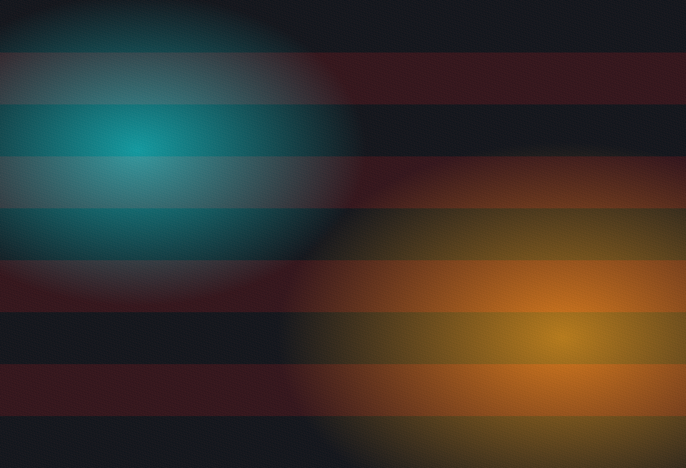
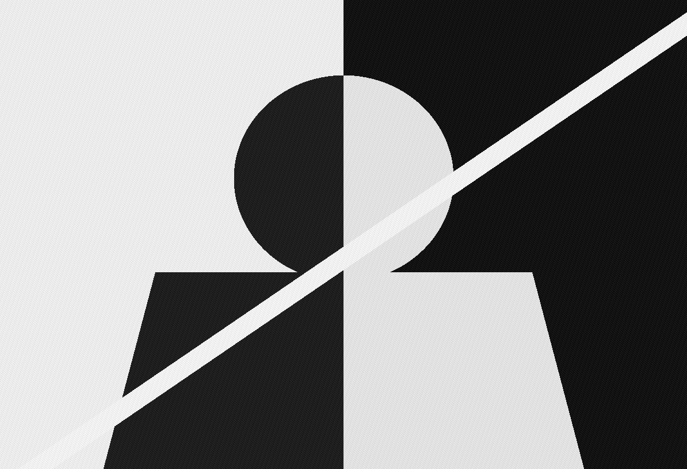

Photographer / multidisciplinary creative
Kaelan Carlson
Writing, photography, videography, and digital art gathered into one high-contrast field of view.
An independent artist building visual essays, moving images, reflective writing, and sonic references around atmosphere, memory, place, and the charged space between observation and invention.
Photo
Film
Words
Sound
01 / Photography
Still images with a cinematic pulse.

Selected series
Street fragments, portraits, field notes, and digital studies.
Use this section for galleries, project essays, client work, contact sheets, or print collections. The layout is built to let large images lead and short captions carry the idea.
02 / Videography
Motion work that feels tactile, paced, and personal.
Films / reels / edits
Music videos, short documentaries, visual poems, and experimental cuts.
Add embedded reels, Vimeo links, BTS notes, or a directors statement. The visual block keeps the section bold before the final videos are dropped in.

03 / Writing
A place for scripts, journals, and long-form thought.

Personal field notes, process logs, travel entries, and daily observations.
Essays on art, culture, image-making, media, and creative practice.
04 / Spotify
Sound as archive, influence, and mood board.
Seasonal edits and working soundtracks.
Open SpotifyLonger-form releases, projects, or curated album notes.
Add albumSingles, favorites, references, and current rotations.
Add songs
05 / About me
Bio
Kaelan Carlson is a photographer and multidisciplinary creative working across writing, photography, videography, and digital art. His practice moves between documentary attention and experimental image making, using words, stills, motion, and music to build a personal language around perception and feeling.
Replace this portrait with your own image when ready. The frame is designed to hold a strong black and white headshot, a studio portrait, or a candid image from the field.
06 / Contact